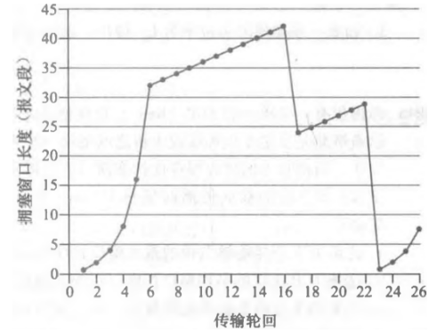

第 6 章 作业 · 应用层
题目 1队列管理与分组调度
题目
假设你是一名网络工程师，正在对比各种队列管理方式的性能。
- 什么是 HOL 阻塞？它出现在输入端口还是输出端口？
- 关于 FIFO、优先权、循环（RR）和加权公平排队（WFQ）分组调度规则。这些排队规则中，哪个规则确保所有分组是以到达的次序离开的？
- RR 和 WFQ 分组调度之间的基本差异是什么？存在 RR 和 WFQ 将表现得完全相同的场合吗？
参考答案
（1）HOL 阻塞
队头阻塞（HOL blocking）：当位于输入端口队列最前端的数据包，因目标输出端口缺乏可用缓冲空间而被迫等待时，即使其后继数据包对应的输出队列存在可用空间，这些后续数据包也会被全部阻塞。这种现象发生在输入端口处。
（2）确保按到达次序离开的排队规则
只有先进先出（FIFO）队列能确保所有数据包按照其抵达的先后次序离开。
（3）RR 与 WFQ 的基本差异
采用轮询调度（RR）时，所有服务类别均被同等对待，即任一服务类别都不具有优于其他类别的优先级。而采用加权公平队列（WFQ）时，不同服务类别会获得差异化处理 —— 在任意时间段内，每个类别可能获得不同量级的服务。当 WFQ 中所有服务类别的权重值完全相同时，其调度效果与轮询调度完全相同。
题目 2TCP 拥塞控制曲线分析
题目
考虑下图，假设 TCP Reno 是一个经历如上所示行为的协议，回答下列问题。在各种情况中，简要地论证你的回答。

- 指出 TCP 慢启动运行时的时间间隔。
- 指出 TCP 拥塞避免运行时的时间间隔。
- 在第 16 个传输轮回之后，报文段的丢失是根据 3 个冗余 ACK 还是根据超时检测出来的？
- 在第 22 个传输轮回之后，报文段的丢失是根据 3 个冗余 ACK 还是根据超时检测出来的？
- 在第 1 个传输轮回里，ssthresh 的初始值设置为多少？
- 在第 18 个传输轮回里，ssthresh 的值设置为多少？
- 在第 24 个传输轮回里，ssthresh 的值设置为多少？
- 在哪个传输轮回内发送第 70 个报文段？
- 假定在第 26 个传输轮回后，通过收到 3 个冗余 ACK 检测出有分组丢失，拥塞的窗口长度和 ssthresh 的值应当是多少？
- 假定使用 TCP Tahoe（而不是 TCP Reno），并假定在第 16 个传输轮回收到 3 个冗余 ACK。在第 19 个传输轮回，ssthresh 和拥塞窗口长度是什么？
- 再次假设使用 TCP Tahoe，在第 22 个传输轮回有一个超时事件。从第 17 个传输轮回到第 22 个传输轮回（包括这两个传输轮回），一共发送了多少分组？
参考答案
（1）—（11）逐问结论
| 小问 | 结论与论证 |
|---|---|
| （1） | TCP 慢启动在区间 [1,6] 和 [23,26] 内运行。 |
| （2） | TCP 拥塞避免在区间 [6,16] 和 [17,22] 内运行。 |
| （3） | 第 16 次传输轮次后，通过三个重复 ACK 确认数据包丢失。若发生超时，拥塞窗口大小将降至 1。 |
| （4） | 第 22 次传输轮次后，因超时检测到报文段丢失，因此拥塞窗口大小重置为 1。 |
| （5） | 初始阈值为 32，因为当窗口大小达到该值时，慢启动停止并开始拥塞避免。 |
| （6） | 检测到数据包丢失时，阈值设置为当前拥塞窗口值的一半。第 16 轮传输检测到丢失时，拥塞窗口值为 42，因此第 18 轮传输期间的阈值为 21。 |
| （7） | 检测到数据包丢失时，阈值设置为当前拥塞窗口值的一半。第 22 轮传输检测到丢失时，拥塞窗口值为 29，因此第 24 轮传输期间的阈值为 14（对 14.5 向下取整）。 |
| （8） | 第 1 轮传输发送数据包 1；第 2 轮发送数据包 2-3；第 3 轮发送数据包 4-7；第 4 轮发送数据包 8-15；第 5 轮发送数据包 16-31；第 6 轮发送数据包 32-63；第 7 轮发送数据包 64-96。因此数据包 70 在第 7 轮传输中发送。 |
| （9） | 发生丢失时，阈值将设置为当前拥塞窗口值（8）的一半，拥塞窗口将设置为新阈值 + 3 个 MSS。因此阈值和窗口的新值分别为 4 和 7。 |
| （10） | 阈值为 21，拥塞窗口大小为 4。 |
| （11） | 第 17 轮：1 个数据包；第 18 轮：2 个；第 19 轮：4 个；第 20 轮：8 个；第 21 轮：16 个；第 22 轮：21 个。故总数为 52 个。 |
题目 3TCP 窗口长度与吞吐量计算
题目
考虑仅有一条单一的 TCP（Reno）连接使用一条 10 Mbps 链路，且该链路没有缓存任何数据。假设这条链路是发送主机和接收主机之间的唯一拥塞链路。假定某 TCP 发送方向接收方有一个大文件要发送，而接收方的接收缓存比拥塞窗口要大得多。我们也做下列假设：每个 TCP 报文段长度为 1500 字节；该连接的双向传播时延是 150 ms；并且该 TCP 连接总是处于拥塞避免阶段，即忽略了慢启动。
- 这条 TCP 连接能够取得的最大窗口长度（以报文段计）是多少？
- 这条 TCP 连接的平均窗口长度（以报文段计）和平均吞吐量（以 bps 计）是多少？
- 这条 TCP 连接在从丢包恢复后，再次到达其最大窗口要经历多长时间？
参考答案
（1）能够取得的最大窗口长度
设 W 表示以报文段计量的最大窗口大小。当最大发送速率超过链路容量时会发生丢包，因此有 W × MSS / RTT = 10 Mbps。
代入公式得 W × 1500 × 8 / 0.15 = 10 × 10⁶，计算可得 W 约为 125 个报文段。
（2）平均窗口长度与平均吞吐量
当拥塞窗口大小在 W / 2 到 W 之间波动时，平均窗口大小为 0.75W = 94（对 93.75 向上取整）个报文段。
平均吞吐量为 94 × 1500 × 8 / 0.15 = 7.52 Mbps。
（3）丢包恢复后再次到达最大窗口所需的时间
发生丢包时，W 变为 W / 2，即 125 / 2 = 62。从 62 增大到 125 需要经过 63 个 RTT（因为窗口大小每个 RTT 增加 1），故所需时间为 (125 - 62) × 0.15 = 9.45 秒。